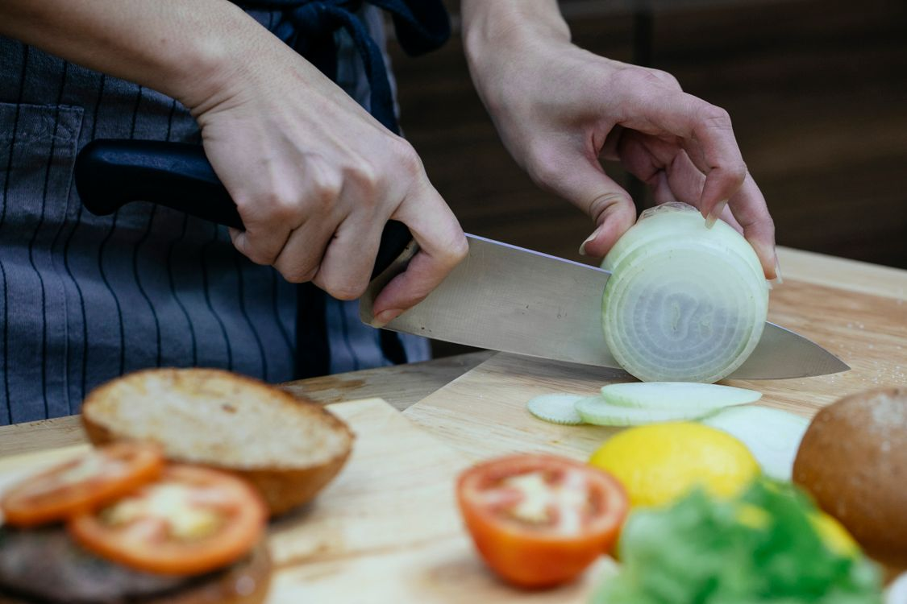
食品处理拿起、分离、切割
控制抓持与切割力度，
保护非目标区域。
面向生命科学与医疗器械研发的自主操作平台
从2 × 2 mm组织样本，验证精细接触能力
缝合平台 · AI产品概念示意
Franka 双臂 / WUJI Hand / 双目显微镜
对受力会变形的物体，完成抓取、牵拉、分离等任务，
控制接触力与形变，以安全操作、避免损伤为目标。

食品处理控制抓持与切割力度，
保护非目标区域。
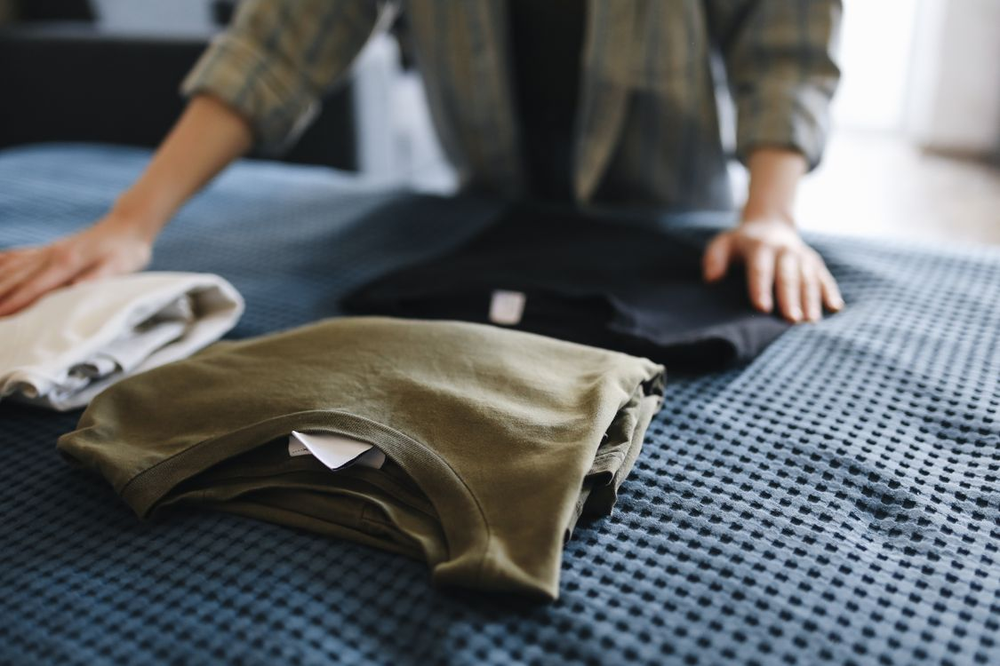
衣物整理随姿态变化调整动作，
避免拉扯、滑落与损坏。
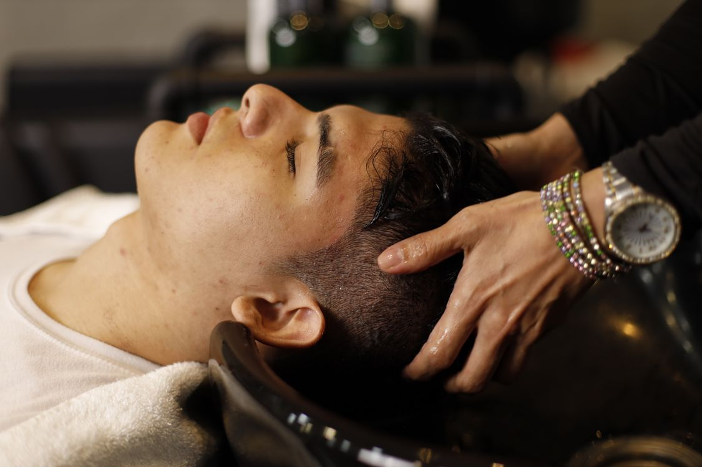
个人护理顺应曲面与个体差异，
以舒适、安全接触为目标。
生命科学与医疗器械研发
先用精细组织任务验证可重复交付，再检验跨任务复用。
进入食品、护理与生物组织场景，需要同时控制动作、形变和接触风险。
| 非接触：观察与定位 | 接触：施力与操作 | |
|---|---|---|
| 硬物体 | 形状相对稳定识别、测量与姿态估计 | 约束与接触力装配、打磨等任务需处理摩擦与稳定性 |
| 软物体 | 形状也可能变化跟踪形变、遮挡与运动状态 | 本项目重点：接触安全控制施力，也要监测形变过大作用力或异常形变可能导致损伤，需要持续反馈 |
安全是应用拓展的前提
限力与柔顺控制 · 形变监测 · 异常停止 / 人工接管
比较代表任务、系统形态与实际商业化内容
| 比较维度 |  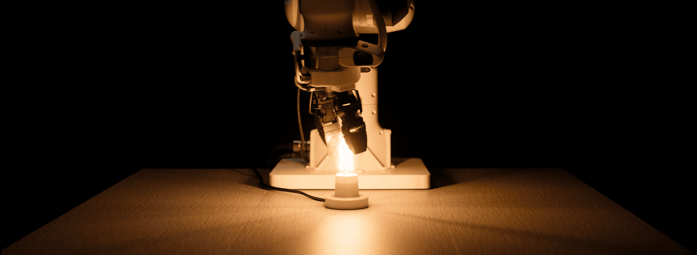 Eka Robotics · 官方演示图 | 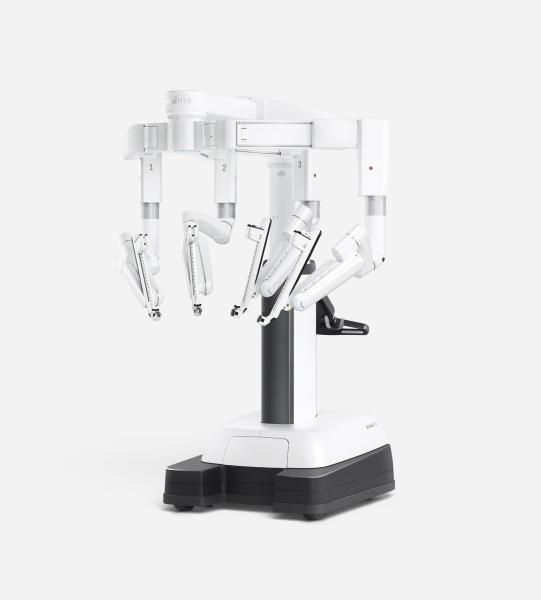 Intuitive Surgical · da Vinci 5 | SymmetryIntelligence 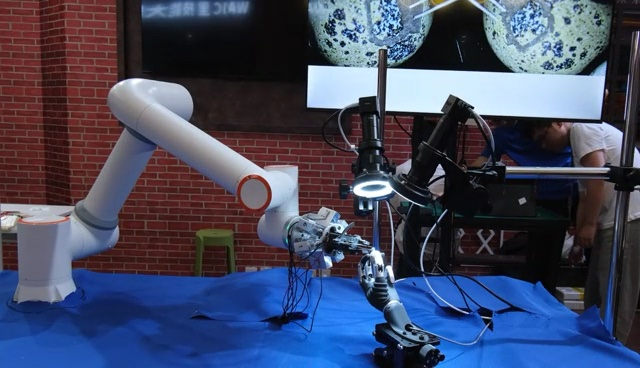 Symmetry · 自主剥蛋壳演示¹ |
|---|---|---|---|
| 代表任务 | 力控插接与旋拧 代表演示：装灯泡 | 医生操控的手术辅助 组织操作与缝合等 | 代表演示：自主剥蛋壳¹ 后续聚焦组织分离与缝合 |
| 系统形态 | 标准机械臂 + VFA自主软件 力觉末端与控制协同设计 | 自研手术系统 专用器械与配套软件 | 专用自主操作系统 商用部件 + 定制硬件适配 |
| 商业化 | 自主操作技术与客户部署 规模收入待核验 | 系统、器械耗材与服务 自主手术AI仍在研发 | 拟交付自主系统与定制硬件 已有场景、意向及订金客户¹ |
| 市值 / 估值 | 约97.43亿元投后估值 · 媒体报道 | 约1.05万亿元上市市值估算 · 2026.10.22 | 2亿元拟议投后估值 · 未完成融资 |
| 融资 | 约10.08亿元 2026年10月 A轮 | 上市公司 股价折合约2982元/股² | 计划2000万–2500万元 硬件落地与首批交付 |
感知接触力与负载变化，
调节器械施力。
跟踪物体形变，
更新抓取点与操作路径。
融合视觉与力反馈，
持续修正操作动作。
三者在接触操作中形成反馈闭环
原PPT第11页 · 原片约10秒
剥蛋壳：分离外壳、保护内部对象，强调器械配合、局部施力与操作边界。
整机演示视角；组织损伤、力控精度和自主程度仍需独立测试。
组织分离与缝合
成功率 / 损伤情况 / 重复性
看见形变 · 响应接触 · 协调器械运动
三维形变与定位
表情、姿态变化时，
更新三维表面与特征位置。
原PPT第48页 · 原片约14秒
外力响应 + 软物体接触
人推机器人 → 机器人接触果冻
两段合成，观察接触响应。
原PPT第52、31页 · 合成16秒
器械运动与机械臂协调
手持器械移动时，
机械臂协调调整姿态。
用户补充视频 · 原片15–35秒
分层、模块化、异步协作 · 专注形变、力控与实时规划
可接入第三方视觉与语义大模型
形变与状态估计 · 实时规划与动作调整
本体与器械动力学 · 力控强化学习
异步协作：通过明确接口交换状态与目标
保留接口，按任务替换模块；
本体相关模块需重新适配与验证。
简单技能探索少量数据习得；
复杂技能按任务验证。
复用第三方感知与已有技能，
聚焦操作层的新增数据与训练。
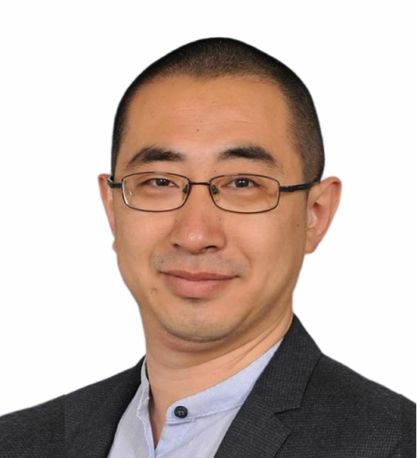
创始人
哈尔滨工业大学 本科、硕士
英国帝国理工学院 博士后
影像引导、三维重建、手眼标定与配准研发背景
既有平台涉及手术器械、软组织力控与负载辨识
以2 × 2 mm样本验收，检验感知、控制与器械适配的复用
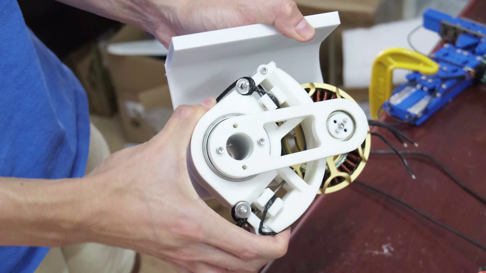
既有平台器械集成画面
原PPT第52页 · 技术背景
拟选硬件：Franka 双臂 + WUJI Hand 双手 + 双目显微镜
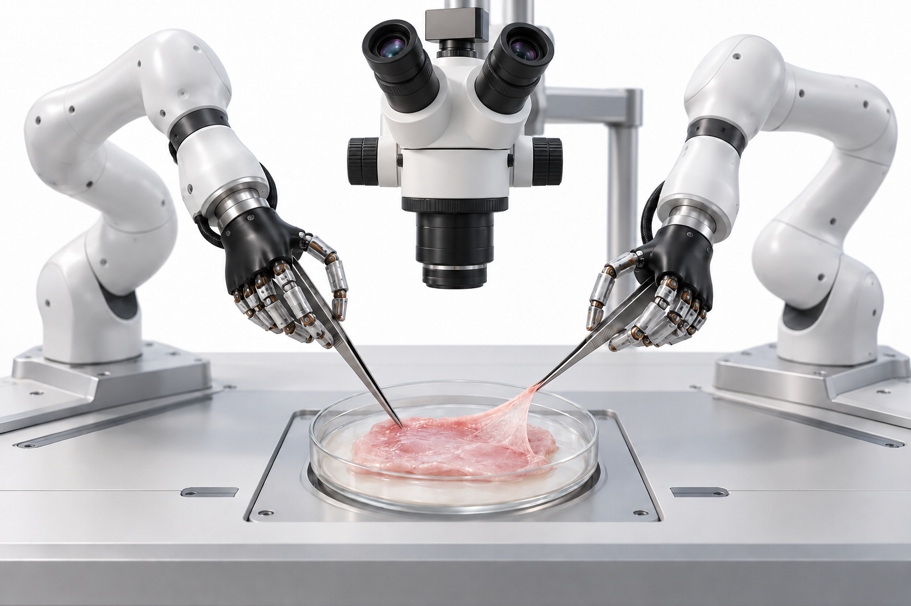
镊子固定 → 牵拉分离 → 抓放转移
首个目标约2 × 2 mm薄样本，
组织完整率、抓放成功率与质量待客户验收。
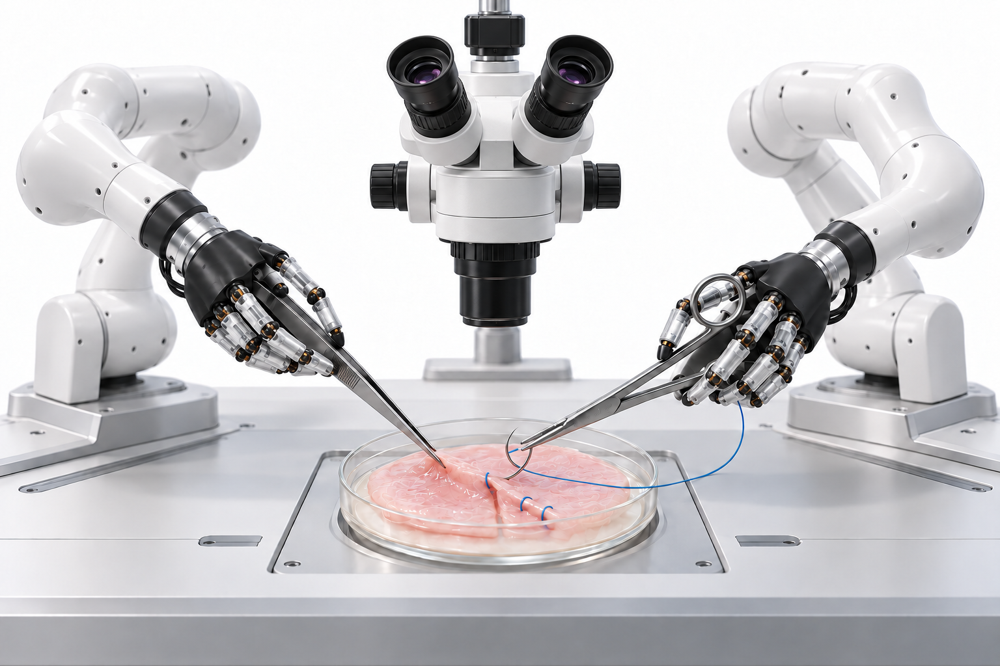
镊子辅助 → 持针器进针 → 缝合
面向动物实验研发的后续方向，
具体任务、适用范围与验收指标待定义。
痛点：脆弱小样本的分离、抓放与转移依赖人工。
核验合同与到账；完成客户验收、交付与尾款。
结构性心脏器械等实验研发场景
痛点：专家操作能力稀缺，操作差异难以量化。
选定局部任务、争取有偿试点；记录轨迹、力、形变与异常。
两个客户初步交流的潜在部署空间，非正式订单。
基准售价（规划区间60万–100万元）
30万元
制造与交付成本假设
50万元
设备毛利假设 / 62.5%
| 软件层级 | 假设年度升级授权价格 |
|---|---|
| 基础功能 | 3万–5万元 |
| 专业操作功能 | 8万–15万元 |
| 高级专科能力 | 30万–50万元 |
高级定价尚无充分支付验证。
器械适配、联合开发和技能授权可另行约定。
停订后保留已购版本和功能 新模型、新技能及重大升级另行授权，安全修复与售后独立约定。
| 成熟装机情景 | 潜在装机量 | 设备收入空间 |
|---|---|---|
| 保守 | 200台 | 1.6亿元 |
| 基准 | 700台 | 5.6亿元 |
| 乐观 | 2,000台 | 16亿元 |
收入空间 = 假设成熟装机量 × 80万元/台
这是跨期设备空间，不是年度销量或官方统计。
700台 × 70%持续付费 × 10万元/台/年
| 年度 | 新增设备 | 硬件收入 |
|---|---|---|
| 第1年 | 2台 | 160万元 |
| 第2年 | 6台 | 480万元 |
| 第3年 | 15台 | 1,200万元 |
| 第4年 | 30台 | 2,400万元 |
| 第5年 | 50台 | 4,000万元 |
| 五年累计 | 103台 | 8,240万元 |
第5年末软件年化运行水平假设
103台 × 60%付费 × 8万元
完成样本分离、轻柔抓放与转移
以共同指标检验技术复用价值
验证实际毛利、部署成本和授权意愿
对照单任务系统，检验新增技术价值
| 首阶段1,200万元用途示例 | 预算 |
|---|---|
| 视觉与柔性操作模型 | 350万元 |
| 硬件集成与控制 | 250万元 |
| 数据、测试与验证 | 200万元 |
| 首代工程化与交付 | 200万元 |
| 客户支持、拓展与运营 | 150万元 |
| 风险及不可预见支出 | 50万元 |
| 合计 | 1,200万元 |
人员成本计入各项目。时间表及现金覆盖期需结合团队编制细化。
| 风险 | 优先应对与验证 |
|---|---|
| 技术泛化不足 | 先限定组织与任务，保留未见测试集，设置人工接管 |
| 握持与接触控制不稳定 | 验证现有硬件、器械接口与异常停止，逐项限定使用边界 |
| 成本与高度定制侵蚀毛利 | 核验BOM及交付工时，限定适配范围，建立标准技能接口 |
| 订阅意愿及采购周期不确定 | 以有偿试点、合同、续费和实际回款逐步验证 |
| 数据与知识产权权属不清 | 融资前确认授权、数据来源、归属与新公司使用权限 |
| 研发范围和动物实验风险 | 优先领域后训练，按任务验证，人类监督并遵守研究伦理要求 |
以首个精细组织任务完成商业化验证，
用真实接触数据检验具身模型的复用价值。
首个客户完成验收与回款
同平台验证至少两类基本操作
多个独立客户形成付费订单
明确数据与知识产权授权
理解机器人交付与医疗器械研发周期，
愿意按技术和商业里程碑投入。